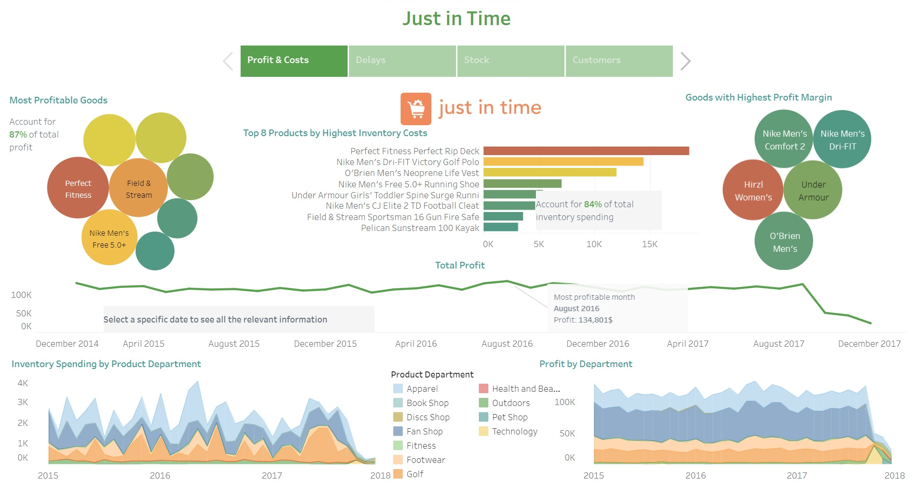
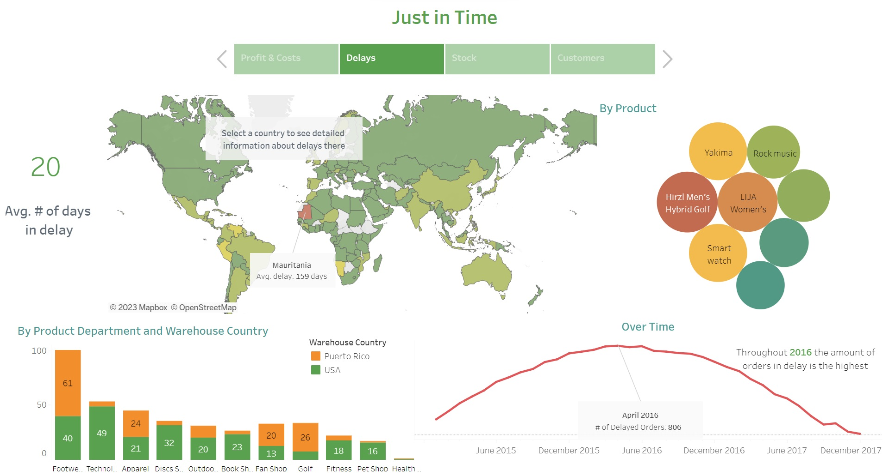
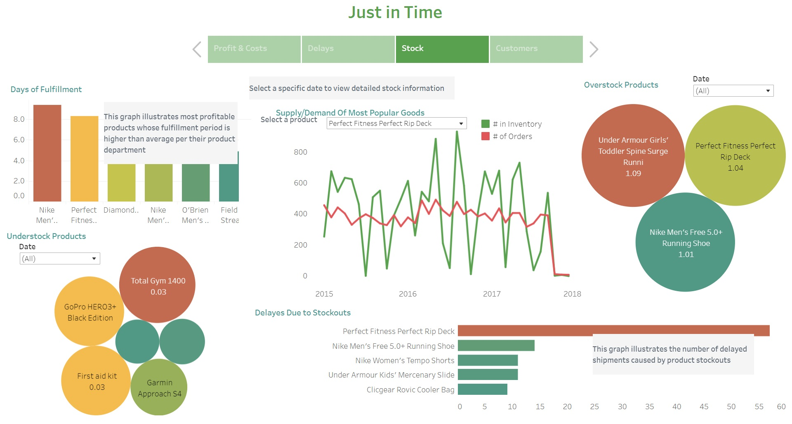
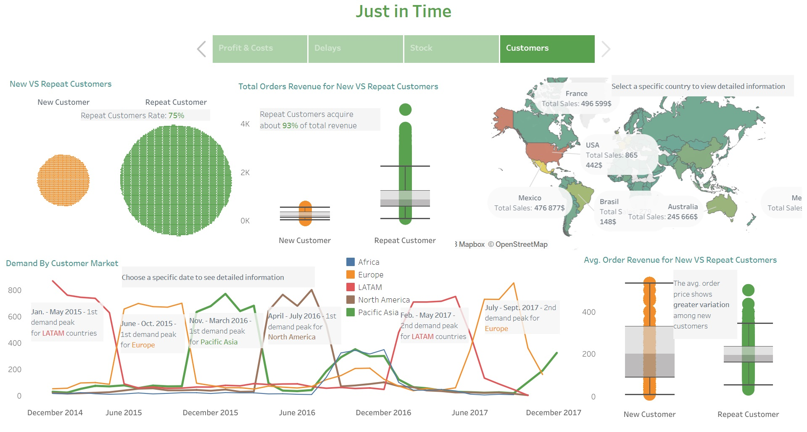

Just In Time Supply Chain Analytics
This research project was implemented using Python and Tableau. The project secured the 3rd place on the DataCamp Competition! 🏆
Just In Time is a company specialized in selling products from various categories worldwide. I have conducted a business analysis for the company focusing on its sales data from January 2015 till December 2017.
Key Insights
Profit & Costs
The monthly profit typically ranges from 104,000 to 135,000 dollars. However, there was a noticeable decline in profit from October to December 2017, which requires further investigation due to potential data limitations. The most profitable product department is Fan Shop, generating approximately $50,000 in monthly profit. Other top-profit product departments include Apparel, Golf, and Footwear, which also incur the highest inventory expenses. The 8 most profitable products are also the most popular among Just In Time's customers worldwide, accounting for approximately 87% of the total company's profit. Among these 8 popular products, 7 of them have the highest inventory costs, representing around 84% of the total inventory spending.
Delays
The average shipment delay across all orders is 20 days. Notably, Mauritania experiences the highest average shipment delay, amounting to 159 days. Different product departments show varying average delay times, with Footwear, Golf, and Fan Shop having the highest number of days in delay. The period between December 2015 and October 2016 witnessed the greatest number of orders with delays. Interestingly, one of the most profitable products, Nike Men's Free 5.0+ Running Shoe, is also among the products with the highest average shipment delay. Certain product categories exhibit significantly lower delays in specific warehouses. For instance, technology goods have a substantial average delay of 49 days in the US warehouse but experience only a minimal average delay of 4 days in the Puerto Rico warehouse. On the other hand, golf goods encounter a considerable delay of 26 days in the Puerto Rico warehouse but experience a relatively shorter delay period of 8 days on average in the US warehouse.
Stock
Inventory levels often fall short of meeting demand, particularly for highly profitable goods. For example, the best-selling product, the Perfect Fitness Perfect Rip Deck, encountered 57 instances of stockouts, with an average supply/demand ratio of 0.03. Moreover, several products exhibit abrupt fluctuations in inventory storage that cannot be fully explained by their corresponding demand and warrant further investigation. Occasionally, there are noticeable spikes in product supply despite moderate demand, leading to increased storage expenses. These observations suggest potential inefficiencies in inventory management and storage practices. Moreover, for 6 out of the top 8 most profitable goods, the fulfillment period exceeds the average fulfillment period for their respective product departments. This observation highlights the importance of considering these extended fulfillment times while planning inventory levels.
Customers
The top countries contributing to the largest amount of gross sales are the USA, France, Mexico, Germany, Brazil, and Australia. Collectively, these 6 countries account for approximately 44% of the total revenue. Repeat customers make up 75% of all customers and generate about 93% of the total revenue. Interestingly, the median order revenue is nearly the same for both repeat and new customers. However, the average order price exhibits higher variability for new customers, as evidenced by the larger Interquartile Range (IQR). Demand in various regions experiences a peak approximately once every 2 years. For LATAM countries, the demand peak occurs during late winter and spring, observed in 2015 and 2017. For Europe, the peak demand happens during summer and early autumn, also seen in 2015 and 2017. In Pacific Asia, the demand peak emerges during winter, recorded once in 2016, and potentially expected again in the winter months of 2018. Lastly, North America experiences its demand peak during mid-spring to mid-summer months, noted once in 2016, with the possibility of recurrence in 2018. Further investigation is necessary for the following years to observe this dynamic trend.
Recommendations
Optimize Product Inventory: To improve profitability and reduce inventory holding costs, it is essential to optimize inventory levels, especially for the top 8 most profitable products, which also happen to be the most popular worldwide. Analyze demand patterns and adjust inventory levels accordingly to avoid stockouts during peak demand periods and reduce excess inventory during low seasons. Maintaining a moderate buffer above the predicted demand during high seasons can help prevent stockouts and optimize inventory costs.
Reorganize Inventory Distribution: Consider reorganizing inventory distribution between warehouses to reduce shipment delays. For instance, some product categories experience significantly lower delays in specific warehouses. By redistributing inventory strategically, delays can be minimized, resulting in improved customer satisfaction.
Marketing Strategies: Focus on promoting products with the highest profit margins to increase overall revenue. Consider advertising the top products with the highest profit margins and offer targeted discounts during peak seasons to boost sales and customer engagement.
Customer Retention: Given that 93% of the revenue comes from repeat customers, it is crucial for the company to prioritize customer retention strategies. By focusing on maintaining strong relationships with existing clients, Just In Time can further enhance its profitability. Implementing loyalty programs, personalized offers, and exceptional customer service will not only foster customer loyalty but also encourage repeat purchases. This approach can lead to increased customer satisfaction and long-term loyalty, making it more cost-effective than investing heavily in marketing campaigns to attract new customers.
Customer Engagement: Leverage insights from demand peak patterns in different regions to design targeted marketing campaigns during peak periods. Engaging customers during these times can drive sales and enhance overall customer satisfaction.
Monitor Shipment Delays: A further analysis is needed to identify the reasons for shipment delays and implement corrective measures to reduce them. Analyzing shipment processes and addressing potential bottlenecks can lead to improved fulfillment efficiency and customer satisfaction.
You may check the Tableau dashboard following the link below.